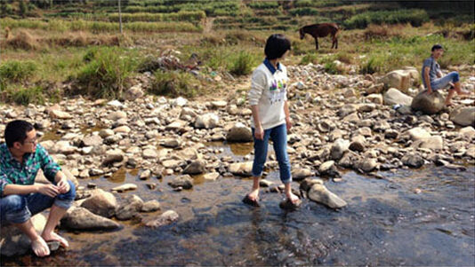
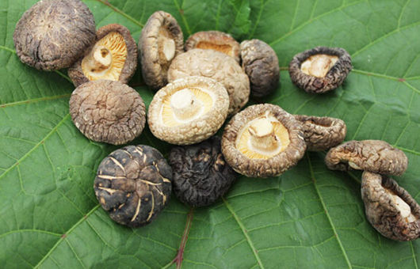

浙江庆元县，这里被誉为“中国生态环境第一县”，庆元历史悠久，风景优美,群山环绕，冬无严寒，夏无酷署，昼夜温差大。这一气候，最宜于香菇等菌类生长，被誉为香菇之源，至今有八百多年生产历史。今天就为大家介绍浙江特产干货——庆元香菇。
{kind=link}
在我们村几乎家家户户都会砍点树木做香菇，因为都是在深山里面采摘的，有时候采一篮子的香菇可能要翻好几座山，基本上都是隔一天才去山上采摘一次。
{kind=link}
中国生态环境第一县——庆元县风貌
- 庆元香菇的生长和种植环境
婶婶们正在将香菇菌种种到椴木中，接种是个技术活，穴打好后，要把菌种尽快接入，以防穴壁干燥及杂菌浸入，接种后，立即用蜡涂封，用锤敲平，减少穴内水分蒸发，保护菌丝生长。
{kind=link}
跟着咱们的脚步去参观下菇棚吧~
菇棚的门栅栏上挂着个羊头骨，婶婶说这是当地的一种风俗，如果某年丰收了，那么来年就会在门上或者屋檐下挂个羊头骨，目的是为了感谢上苍的恩赐。
{kind=link}
接种后的锻木会以“井“字形在菇场上堆放，锻木上堆后，需保持堆放场的温度恒定10-15摄氏度，锻木摆放都有最大程度的保证空气流通减少相互接触的面积,给香菇一个宽敞的家，香菇属好气性菌类，足够的新鲜空气是保证香菇正常生长发育的重要环境条件之一。
另外锻木的含水量最需控制在50-60%之间，高了低了都不行，这也是决定香菇厚度的最关键因素。
{kind=link}
看咱手上的拿的一根香菇锻木，上面的香菇刚刚长出来哦，还很小呢，像一个个小伞帽。

经过几个月的子实体生长发育，积累的营养物质已经发育成一个个香菇了。
在小镇的乡村小路上，骑着摩托车、拉着香菇的菇农已成为当地的一道靓丽的风景，咱们也非常希望能通过自己的努力帮助当地的菇农们销售出更多的优质香菇~帮助菇农增收的同时也能实现咱们的创业梦~
{kind=link}
小镇的香菇口感好、厚度厚还有个秘密，就是浇灌菌种的水源于天然山泉，如此清澈见底的泉水孕育出来的香菇，想来必是极好的~
{kind=link}
采摘下来新鲜的香菇需要剪根并过筛，剪根需要耗费大量的人工，同时还会造成损耗，故价格也会相对较高。
{kind=link}
- 飞雷家香菇介绍
在介绍咱家香菇前，先教大家如何鉴别香菇的好坏：
1、香菇的干度，是否够干
咱家的干度最棒的6粒香菇与一般的5粒香菇一样重，这是因为差的香菇水分比较多，不但占分量而且容易发霉
{kind=link}
2、香菇整体是否均匀，肉是否厚
咱家的这款小香菇(金钱菇)是家用型的，一只只呈小圆形，收缩的很紧扎，肉头厚实，根蒂短小，非常适合家庭使用。
{kind=link}
3、香菇的根脚是否剪去
有人以为，香菇大才好，却不知大而薄，根蒂很长，远不如小香菇的味香而富有营养。大香菇一般都是供应给食堂等地方，一分价钱一分货。
咱家的精选香菇，根脚都已减去，肉质厚而大小均匀，畸形的很少;而常见的劣质香菇，根未剪，肉质薄而且大小不均匀，畸形很多。
香菇按大小分级可分为直径2厘米以下、直径2.5-3.5厘米、直径4厘米以上3个等级，其中直径2.5-3.5厘米这档最为大众所青睐，价格会比其他2个等级高4-5元每斤，我家的香菇正是品质最好的直径2.5-3.5厘米的香菇哦~
{kind=link}
咱家的香菇香味浓郁，肉质厚实，表面平滑、大小均匀。
{kind=link}
自然晾晒，干度好，精选品质，口感鲜美，纯香入味，沁人心脾。
{kind=link}
干香菇与泡发的香菇对比图
{kind=link}
爱吃香菇的亲们千万要来看一看哦！咱们一起来切香菇！看着饱满的香菇，就有一种赶紧将它下锅的冲动！（香菇君，不要介意啊，你实在太诱人了）
{kind=link}
切开后的香菇肉质嫩白、饱满，绝对属于上乘的美味！

浙江庆元特产香菇源于中国生态环境第一县——庆元县，每一颗都来自大自然的馈赠。
- 特产推荐

山东临沂特产沂蒙山区农家自制地瓜干
河南焦作特产温县垆土铁棍山药

云南特产天山雪莲果

韩国进口特产韩国农协蜂蜜柚子茶
- 特产推荐

- 北方地区特产
- 南方地区特产
- 热门特产
- 产品特点
品质特性
香菇，又名香蕈，是食用菌的一个主要品种，是由菌丝体和子实体两部分组成，菌丝体是营养器官，子实体是繁殖器官。蘑菇由成熟的孢子萌发成菌丝，菌丝为多细胞，蘑菇的子实体在成熟时很像一把撑开的小伞。由菌盖、菌柄、菌褶、菌环、假菌根等部分组成 [3] 。香菇“肌理玉洁，芳香韵味”，营养丰富，风味独特，素有“诸菌之冠，蔬菜之魁”美称，是中国传统的“山珍”之一。
营养价值
据科学家测定，香菇蛋白中含有18种氨基酸，而人体必需8种氨基酸中，香菇就占了7种。同时，香菇还含有多量的谷氨酸，再加上各种糖类、鸟尿圜等，组成了香菇固有的独特鲜美的风味和其他食品所无以比拟的清香，是名副其实的“山珍”。
药用价值
庆元香菇不但是席上之珍，还有独特的药用价值。它含蛋白质中的十八种氨基酸，其中人体必需的有七种。香菇中还含有一般蔬菜所缺乏的维生素D原（麦角固醇）。它同太阳光中的紫外线接触后变成维生素D，可以增强人体抵抗力，防治婴儿的佝偻病，有助于骨胳、牙齿的生长，促进身体正常发育。香菇中还有三十多种酶，是纠正人体酶缺乏的独特食品。香菇中所含的腺膘吟可预防肝硬化，还可抑制血液中胆固醇的增加，有降低血压的功效。香菇中所含由B-1.3萄糖甘酶和B-1.4葡萄糖聚搪所组成的香菇多糖以及干扰素诱导物，对抑制病毒和抗癌变有良效。据清代黄宫锈《本草求真》记载：“香菇味甘性平，大能益气。助食及理小便失禁”。民间也有以香菇辅助治疗小儿天花麻疹、粘膜溃疡、坏血病等症的经历。因此，香菇也是药中之宝。
- 产地环境
丽水市庆元县位于浙江省西南部，地处北纬27°25′—27°51′，东经118°50′—119°30′之间，总面积1898平方千米。地形属浙西南中山区，有溪谷、盆地、丘陵、低山、中山等多种地貌，地势由东北向西南倾斜。气候属亚热带季风气候，温暖湿润，四季分明，年平均气温17.4℃，降水量1760毫米，无霜期245天，气候总体特点是冬无严寒，夏无酷暑。就局部而言，东、北部气温较之西南部和中部低，无霜期短，昼夜温差大，最宜于香菇等菌类生长。
庆元县由于气候适宜、生态环境多样，真菌资源十分丰富。大型真菌达423种，其中可食（药）用真菌就有360种，有价值的重要菌种79种 [6] 。作为“中国生态环境第一县”，良好的生态环境为庆元香菇的种植提供了优越的地域保护，为庆元香菇产业的发展提供了物质基础。
- 生产情况
1992年，庆元县撤区并乡后的20个乡镇中，有2个香菇专业乡、镇（岭头、荷地），78个香菇专业村，10000余家香菇专业户。
1993年，庆元县有60%以上农户从事香菇生产；有10%人口参与香菇购销；有12%人口从事香菇原材料的加工、运输、销售。香菇产量达 5000吨，产值 1.4亿元。
2015年，庆元县从事食用菌产业生产达7多万人，占全县农业人口54%，食用菌常年栽培量1.5亿袋，年产量9万多吨，产值5.2亿元，占农业产值的45%。全县食用菌企业将近300家，其中加工型企业近80家，省农业龙头企业7家，基本形成了由低至高多层级产品结构的产业链，并逐步由香菇加工向休闲、保健、药用等高附加值产品方向发展。2015年，庆元县食用菌全产业链入选浙江省示范性农业全产业链。
- 历史文化
种菇习俗
第一个发现野生香菇，并发明砍花法进行人工栽培，使其传之后代的，是宋代的吴煜。因排行老三，后人尊称为吴三公。他系宋时龙泉县龙溪乡龙岩村人，一直延续到1973年7月恢复庆元县时，该村建制才划归庆元县斋郎乡。吴三公既是龙泉人，又系庆元人，如同刘伯温既是青田人，又系文成人，两说均无矛盾。现名扬四海的庆元香菇，和早已成名的龙泉香菇是同祖同宗一家人。因之龙泉和庆元一样是世界香菇的发源地，是一个不争的事实。当时凤阳山是龙、庆、景菇民的聚散地，并在此建了凤阳庙，奉吴三公为“菇神”。每年菇民上山时，都要来凤阳庙祭祀，祈求菇神保佑上山平安，种菇顺利，品质优良，并流传了不少种菇的习俗。
过旦
菇民在菇寮种菇时，都要在菇寮的吴三公神位前和山魈庵（在离基寮一、二里的山岙口，以在三块巨石叠成，称为山魈庵）两处设祭礼神，俗称“过旦”。
洗谷浴
“枫树落叶，夫妻分别，枫树抽芽，丈夫归家”。这是流传于菇民区反映菇民种菇季节的俗语。每当枫叶飘零的金秋季节，菇民都有一次传统的“洗谷浴”惯例。这一天，菇民家家户户都要做米麻糍、杀猪。菇民家的妇女都要吃素沐浴。沐浴后，要用米麻糍及肉等，在各村口的吴三公殿礼神，祈求菇神保佑亲人。这种活动叫“洗谷浴”。
告别饭
菇民上山种菇，要选择逢三、逢六、逢九的吉日出门。离家的头天晚上，全家大小要吃“告别饭”。告别饭由家中的长者主持，饭前焚香点烛，由长者斟酒举杯，上对“皇天”，下对“地府”，泼酒祷告，预祝菇民开门大吉大利，平安回家。入座后，长者举刀将桌上的全鸡腿子一刀切断，分给菇民留着路上吃，然后全家聚食。
菇山犬
每一菇寮都有“菇山犬”。菇山犬系菇民家养，带到菇山守寮，非常忠于主人，所以就叫“菇山犬”。
出门不宿店
过去菇民生活困难，上菇山时都带有数十个米麻糍，每餐食一个可饱。临餐时，捡些柴火烤热便吃。夜宿庙堂、凉亭，名之“清净”。
菇山帮工
菇民无钱租山，只能上菇山帮工。帮工要受四测，即力测，力气要大；目测，能选菇种树；地测，能选择适当的菇地；斧测，过去“砍花法”种菇，对不同的菇树、砍花的深度、方向都有讲究，斧测就是考察“菇民”的经验。经过四测，才能帮工，或当粗工，或当师傅。在菇民中流传着一首民谣，可见其辛酸：
做人莫作香菇儿，寒冬腊月走江西。
人穷无钱买树种，无奈为人做苦力。
出门方知家里暖，山棚破旧寒风吹。
白天鸟鸣来相伴，夜闻兽叫阵阵凄。
如遇年景不照应，半年劳苦空手归。
落寮
也叫落棚，意指回家。菇民落寮日期秘而不宣，一般要在远离菇山的地方面谈，商谈后，不能表露“落寮”迹象。落寮日的黎明，菇民互不搭话，各自收拾用具、衣物，挑着就走。落寮中留有一老菇民，等其他菇民“落寮”后，翻倒饭锅，锁上寮门，匆匆赶上先行的菇民，一起回家。一路上不能回头看寮，也不能说话，等走出菇山五里路后，才能说话。俗怕“寮神”追赶，实为怕人暗害。
讨彩头
菇民回家都要买好猪肉、鱼鲞、香烛、鞭炮、香烟、糖果等物，一进村口，先往吴三公殿点香烛跪拜，并鸣放鞭炮。村民闻声赶来道喜必讲彩话，菇民就要致谢，讨彩头后，要给村民分烟、分糖果，表示礼节。
- 产品荣誉
20世纪90年代，“庆元香菇”先后获得“第五届亚太国际贸易博览会”、“第二届国际各行业产品畅销博览会”金奖。
2003年，庆元香菇获准注册地理标志证明商标，成为中国食用菌行业第一个地理标志证明商标。此后，庆元香菇品牌先后获“最受消费者喜爱的中国农产品区域公用品牌”、“全国食用菌行业最具影响力品牌”、“浙江省十大名菇”、“浙江省著名商标”、“中国驰名商标”、“浙江省名牌农产品”、“浙江区域名牌农产品”、“全省农产品证明商标十大创牌先锋”等荣誉。
2009—2014年，中国农产品区域公用品牌价值评估课题组对“庆元香菇”进行品牌价值评估，庆元香菇品牌价值从2009年首次评估的43.17亿元，增加到2014年46.17亿元，品牌价值增涨了3亿元，并连续6年蝉联中国食用菌第一品牌。
- 地理标志
地域保护范围
庆元香菇原产地域范围以浙江省丽水市人民政府《关于明确“庆元香菇”产地地域的批复》（丽政发〔2001〕89号）提出的地域范围为准，为庆元县、景宁县、龙泉市所辖行政区域。